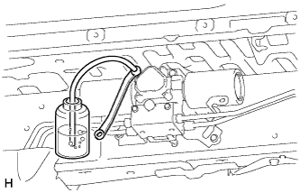

STABILIZER CONTROL VALVE (w/ KDSS) > INSTALLATION |
| 1. INSTALL STABILIZER CONTROL WITH ACCUMULATOR HOUSING ASSEMBLY |
Install the stabilizer control with accumulator housing with the 3 bolts.
Connect the connector, and then attach the clamp to the hole of the bracket.
| 2. INSTALL FRONT STABILIZER CONTROL TUBE |
Install a new front stabilizer control tube (front side and rear side).
Apply suspension fluid to the threads of the flare nuts.
Temporarily install the 6 flare nuts on the front stabilizer control tubes.
Install the 3 bolts.
Using a union nut wrench, tighten the 6 flare nuts on the front stabilizer control tubes.
| 3. INSTALL FRONT STABILIZER CONTROL TUBE INSULATOR |
Install the front stabilizer control tube insulator with the 2 bolts.
| 4. INSTALL FRONT STABILIZER TUBE PROTECTOR |
Install the front stabilizer tube protector with the 2 bolts.
| 5. INSTALL REAR STABILIZER CONTROL TUBE |
Install a new rear stabilizer control tube (front side and rear side).
Apply suspension fluid to the threads of the flare nuts.
Temporarily install the 4 flare nuts on the rear stabilizer control tubes.
Install the 5 bolts.
Using a union nut wrench, tighten the 4 flare nuts on the rear stabilizer control tubes.
Install the rear stabilizer control tubes to the rear stabilizer control cylinder with the 2 union bolts and 2 new pressure port gaskets.
| 6. BLEED AIR FROM SUSPENSION FLUID |
Remove the stabilizer control valve protector (Click here).
Check the pipe connections and whether or not any hydraulic circuit parts are damaged.
| *1 | Stabilizer Control with Accumulator Housing Bleeder Plug | *2 | Upper Chamber Stabilizer Control with Accumulator Housing Shutter Valve |
| *3 | Lower Chamber Stabilizer Control with Accumulator Housing Shutter Valve | *4 | Stabilizer Control Accumulator Housing Inlet Port |
| *5 | Front Stabilizer Control Cylinder Upper Chamber Bleeder Plug | *6 | Front Stabilizer Control Cylinder Lower Chamber Bleeder Plug |
| *7 | Rear Stabilizer Control Cylinder Upper Chamber Bleeder Plug | *8 | Rear Stabilizer Control Cylinder Lower Chamber Bleeder Plug |
Add new fluid to SST (high pressure oil pump) and bleed air from SST hoses.
Remove the service valve cap. Then put fluid into SST (high pressure oil pump) and connect SST to the suspension fluid inlet port.
Loosen the shutter valves of the stabilizer control with accumulator housing.
| *1 | Stabilizer Control with Accumulator Housing Assembly | *2 | Upper Chamber Stabilizer Control with Accumulator Housing Shutter Valve |
| *3 | Lower Chamber Stabilizer Control with Accumulator Housing Shutter Valve | *4 | Stabilizer Control Accumulator Housing Inlet Port |
Using SST (high pressure oil pump), add fluid.
Pump SST (high pressure oil pump) to add fluid until the pressure reaches 5 MPa (51.0 kgf/cm2, 725 psi).*1
Check for fluid leaks from the pipe connections and hydraulic circuit parts.
|  |
Add fluid to the stabilizer control with accumulator housing.*2
 |
Add fluid to the lower chamber of the front stabilizer control cylinder.*3
Add fluid to the upper chamber of the front stabilizer control cylinder.*4
Add fluid to the lower chamber of the rear stabilizer control cylinder.*5
 |
Add fluid to the upper chamber of the rear stabilizer control cylinder.*6
Repeat procedures *1 to *6 until the air in the fluid is gone.
Using SST (high pressure oil pump), bleed the air.
Bleed air from the stabilizer control with accumulator housing.
Bleed air from the upper chamber of the front stabilizer control cylinder.
Bleed air from the upper chamber of the rear stabilizer control cylinder.
Disconnect the front stabilizer control arm and front stabilizer link, and set the front stabilizer control cylinder to the maximum length.
Disconnect the rear stabilizer bar and rear stabilizer link, and set the rear stabilizer control cylinder to the maximum length.
Bleed air from the lower chamber of the front stabilizer control cylinder.
Pump SST (high pressure oil pump) to apply 7 MPa (71.4 kgf/cm2, 1015 psi) of pressure.
Loosen the lower chamber bleeder plug of the front stabilizer control cylinder to bleed the air.
Tighten the bleeder plug so pressure can be applied. Repeat these steps until the air in the fluid is gone.
Tighten the lower chamber bleeder plug of the front stabilizer control cylinder.
Bleed air from the lower chamber of the rear stabilizer control cylinder.
Pump SST (high pressure oil pump) to apply 7 MPa (71.4 kgf/cm2, 1015 psi) of pressure.
Loosen the lower chamber bleeder plug of the rear stabilizer control cylinder to bleed the air.
Tighten the bleeder plug so pressure can be applied. Repeat these steps until the air in the fluid is gone.
Tighten the lower chamber bleeder plug of the rear stabilizer control cylinder.
Connect the front stabilizer control arm to the front stabilizer link and the rear stabilizer bar to the rear stabilizer link.
With all wheels on the ground, apply the specified amount of pressure using SST. Maintain this pressure for 2 to 3 minutes to stabilize the pressure.
| Condition | Specified Condition |
| Fluid temperature is 20°C (68°F) | 2.6 to 3 MPa (26.6 to 30.5 kgf/cm2, 377 to 435 psi) |
Measure vehicle height (Click here).
Tighten the shutter valves of the stabilizer control with accumulator housing.
Remove SST (high pressure oil pump) from the suspension fluid inlet port.
Install the service valve caps to the suspension fluid inlet port.
Inspect for suspension fluid leaks (Click here).
Install the stabilizer control valve protector (Click here).
| 7. APPLY PRESSURE ACCORDING TO TEMPERATURE MANAGEMENT CHART WHEN FILLING FLUID |
| *1 | 2.42 MPa (24.7 kgf/cm2, 351 psi) | *2 | 2.50 MPa (25.5 kgf/cm2, 363 psi) |
| *3 | 2.59 MPa (26.4 kgf/cm2, 376 psi) | *4 | 2.67 MPa (27.2 kgf/cm2, 387 psi) |
| *5 | 2.76 MPa (28.1 kgf/cm2, 400 psi) | *6 | 2.85 MPa (29.1 kgf/cm2, 413 psi) |
| *7 | 2.95 MPa (30.1 kgf/cm2, 428 psi) | *8 | 3.05 MPa (31.1 kgf/cm2, 442 psi) |
| *9 | 3.27 MPa (33.3 kgf/cm2, 474 psi) | *10 | 3.27 MPa (33.3 kgf/cm2, 474 psi) |
| *11 | 3.38 MPa (34.5 kgf/cm2, 490 psi) | *12 | 2.39 MPa (24.4 kgf/cm2, 347 psi) |
| *13 | 2.46 MPa (25.1 kgf/cm2, 357 psi) | *14 | 2.53 MPa (25.8 kgf/cm2, 367 psi) |
| *15 | 2.60 MPa (26.5 kgf/cm2, 377 psi) | *16 | 2.67 MPa (27.2 kgf/cm2, 387 psi) |
| *17 | 2.75 MPa (28.0 kgf/cm2, 399 psi) | *18 | 2.82 MPa (28.8 kgf/cm2, 409 psi) |
| *19 | 2.90 MPa (29.6 kgf/cm2, 421 psi) | *20 | 2.98 MPa (30.4 kgf/cm2, 432 psi) |
| *21 | 3.06 MPa (31.2 kgf/cm2, 444 psi) | *22 | 3.14 MPa (32.0 kgf/cm2, 455 psi) |
| 8. INSPECT FOR SUSPENSION FLUID LEAK |
Perform a driving test.
Check for fluid leakage from the parts and connections shown in the illustration.

| *a | Supplied Tube | - | - |
| 9. INSTALL FRONT WHEEL LH |
| 10. INSTALL REAR WHEEL LH |
| 11. MEASURE VEHICLE HEIGHT |
Set the tire pressure to the specified value(s) (Click here).
Bounce the vehicle to stabilize the suspension.
 |
Measure the distance from the ground to the top of the bumper and calculate the difference in the vehicle height between the left and right sides. Perform this procedure for both the front and rear wheels.
| 12. INSTALL NO. 1 ENGINE UNDER COVER SUB-ASSEMBLY |
 |
Hook the No. 1 engine under cover to the vehicle body as shown in the illustration.
Install the 4 bolts.
| 13. INSTALL STABILIZER CONTROL VALVE PROTECTOR |
Install the stabilizer control valve protector with the 2 bolts.
| 14. INSTALL SIDE STEP ASSEMBLY LH |
Attach the 6 clips to install the side step.
Install the 3 screws.
Using a T30 "TORX" socket wrench, install the 2 screws.
Install the side step with the 6 bolts.
Connect the connector.
Attach the clamp.
| 15. CONNECT CABLE TO NEGATIVE BATTERY TERMINAL |